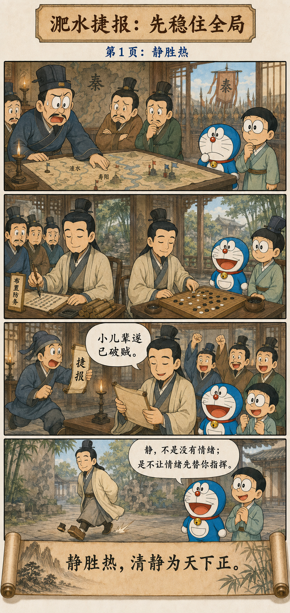
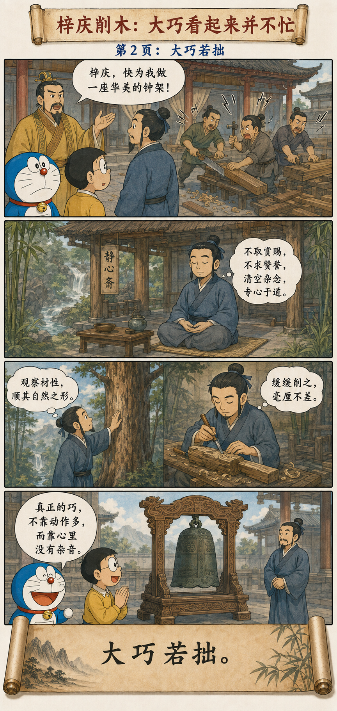
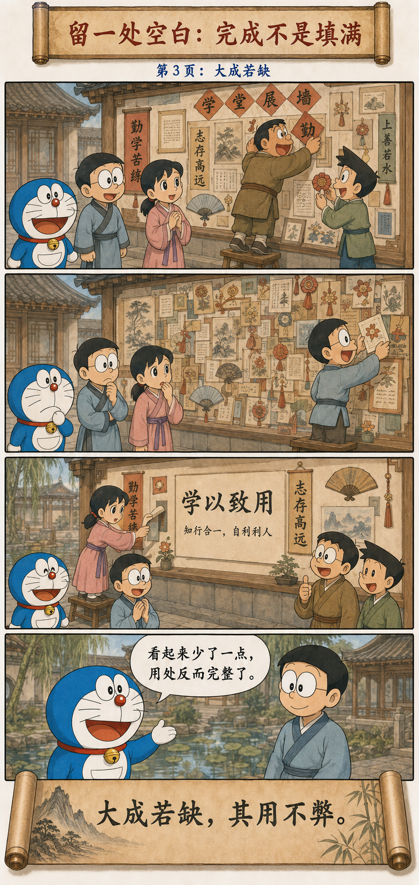

大成、大盈、大直、大巧、大辩
Great Completion, Fullness, Straightness, Skill, and Eloquence
大成若缺，其用不弊；
大盈若冲，其用不穷；
大直若屈，大巧若拙，大辩若讷。
躁胜寒，静胜热。
清静为天下正。
Great completion seems incomplete, yet its use does not fail. Great fullness seems empty, yet its use is inexhaustible. Great straightness seems bent; great skill seems awkward; great eloquence seems hesitant. Movement overcomes cold; stillness overcomes heat. Clarity and stillness bring order to the world.
越成熟的能力，越不需要把自己塞满
The More Mature the Capacity, the Less It Needs to Look Full
还不稳固的能力常急着证明：每处都要填满，每句话都要回答，每个动作都要显得聪明。真正成熟以后，人反而容得下一点空白、迟疑和不显眼，因为他不再依靠表面完整来维持自信。
Unstable ability often rushes to prove itself: every space must be filled, every question answered, every movement made clever. Mature ability can hold some emptiness, hesitation, and plainness because it no longer depends on a display of completeness for confidence.
“若缺”“若冲”“若拙”“若讷”都有一个“若”字。老子没有赞美真正的残缺、空洞、笨拙或不会说话；他写的是有实质的能力，外表却不忙着占满舞台。
Each phrase says “seems”: seems incomplete, empty, awkward, or hesitant. Laozi is not praising actual deficiency, emptiness, incompetence, or speechlessness. He describes substantial ability that does not hurry to occupy the whole stage.
捷报、木鐻与一处空白
A Victory Report, a Bell Stand, and an Empty Space



淝水捷报：先稳住全局，再释放情绪
Xie An: Stabilize the Whole Before Releasing Emotion
淝水之战时，前秦大军压境，东晋朝廷震动。谢安安排防务以后与客下棋。捷报送来，他看完只平静地说：“小儿辈遂已破贼。”
During the Battle of Fei River, Former Qin’s great army threatened the Eastern Jin and alarmed the court. After arranging the defense, Xie An played Go with a guest. When the victory report arrived, he read it and merely said, “The young fellows have defeated the enemy.”
但故事还有后半段：客人离开后，谢安过门槛时折断木屐齿而没有察觉，可见他并非毫无喜悦。前面的镇定不是把感情杀死，而是在局势仍需判断时，不让恐惧与狂喜抢走指挥权。
The story has a second half. After the guest left, Xie An crossed a threshold and broke a tooth of his wooden clog without noticing, revealing intense joy. His earlier calm did not kill emotion; while judgment still mattered, he did not surrender command to fear or elation.
削木为鐻：大巧从减少杂念开始
Zi Qing: Great Skill Begins by Reducing Inner Noise
《庄子·达生》写木匠梓庆削木制作悬钟的架子，成品精妙得像鬼神所作。鲁侯问他用了什么技巧，他说自己在动手前先斋戒：三日忘记赏罚，五日忘记毁誉，七日连身体与朝廷都忘了。
In Zhuangzi’s “Understanding Life,” the woodworker Zi Qing makes a bell stand so marvelous that it appears supernatural. Asked for his method, he explains that he fasts before beginning: after three days he forgets reward and punishment, after five praise and blame, and after seven even body and court.
然后他进入山林观察树木，直到一棵树的自然形态与心中的器物相遇，才下手制作。大巧若拙，不是技术少，而是技术已经安静到不必靠忙乱显示自己。
He then enters the forest and studies the trees until the natural form of one meets the vessel already clear in his mind. Great skill seems awkward not because technique is absent, but because technique has become quiet enough not to advertise itself through busyness.
完成不是把每个角落都填上
Completion Does Not Mean Filling Every Corner
一面展板若塞进所有文字、奖状、图片和装饰，看起来没有遗漏，读者却找不到重点。删去重复，留下层次与空白，版面表面上“缺”了一些，功能反而第一次完整。
A display board packed with every sentence, certificate, image, and decoration appears to omit nothing, yet readers cannot find the point. Remove repetition and leave hierarchy and empty space: the surface seems less complete, while the function becomes whole for the first time.
真正能用的系统，都要给未来留下容量。日程排到一秒不剩，经不起一次意外；预算花到一分不剩，承受不了变化；领导把每个决定都替团队做完，团队便没有成长的位置。
Every usable system needs spare capacity for the future. A schedule filled to the second cannot absorb surprise; a budget spent to the last coin cannot survive change; a leader who makes every decision leaves no room for a team to grow.
表面不完整，为什么用途反而长久
Why Apparent Incompleteness Can Sustain Use
不是永远冷静，而是恢复判断的温度
Not Permanent Coolness, but a Temperature Fit for Judgment
“躁胜寒，静胜热”先承认动静各有其用：寒冷时活动，燥热时安静。清静并不是把“静”立成永恒姿势，而是不过度，让行动与环境重新匹配。
“Movement overcomes cold; stillness overcomes heat” first recognizes that movement and stillness each have a use. Clarity does not turn stillness into a permanent pose. It avoids excess and brings action back into proportion with circumstance.
遇到紧急情况需要立刻行动，清静不等于拖延；信息混乱、情绪高涨时需要先停一下，行动也不等于勇敢。关键不是看起来动还是静，而是谁在作决定：清楚的判断，还是被放大的冲动。
Emergency may require immediate action; calm is not delay. Confusion and heightened emotion may require a pause; movement is not automatically courage. The issue is not whether one looks active or still, but whether clear judgment or amplified impulse is deciding.
“若拙”不能替真正的粗糙开脱
“Seeming Awkward” Does Not Excuse Poor Work
大巧若拙的前提是“大巧”，大成若缺的前提是“大成”。做得不好却拒绝反馈，不是返璞归真；准备不足却故作从容，也不是清静。判断仍要回到作品是否可靠、行动是否有效、结果能否经受检验。
Great skill must first be skill; great completion must first be completion. Poor work that rejects feedback is not simplicity, and inadequate preparation disguised as calm is not stillness. Ask whether the work is reliable, the action effective, and the result testable.
别把圆满做成一间没有门的屋子
Do Not Turn Perfection into a Room Without a Door
第四十五章重新定义了完成：它不是封死一切可能，而是已经足够成立，又能继续使用；不是把所有声音压下去，而是在热闹中保留清楚；不是没有情绪，而是不让情绪替判断掌舵。
Chapter 45 redefines completion. It is not the closure of every possibility, but something sound enough to stand and open enough to keep working. It does not silence every voice, but preserves clarity amid noise. It does not eliminate emotion, but refuses to let emotion steer in place of judgment.
留一点空，不是少做；
是让已经完成的东西，还能继续生长。
Leaving room is not doing less; it lets completed work continue to grow.
原典与故事出处
Primary Texts and Story Sources
《道德经》第四十五章 · 《太平御览》所载谢安淝水捷报故事 · 《庄子·达生》梓庆削木为鐻
Chapter 45 of the Daodejing, the Fei River story preserved in the Imperial Reader, and Zi Qing’s story in Zhuangzi’s “Understanding Life.”